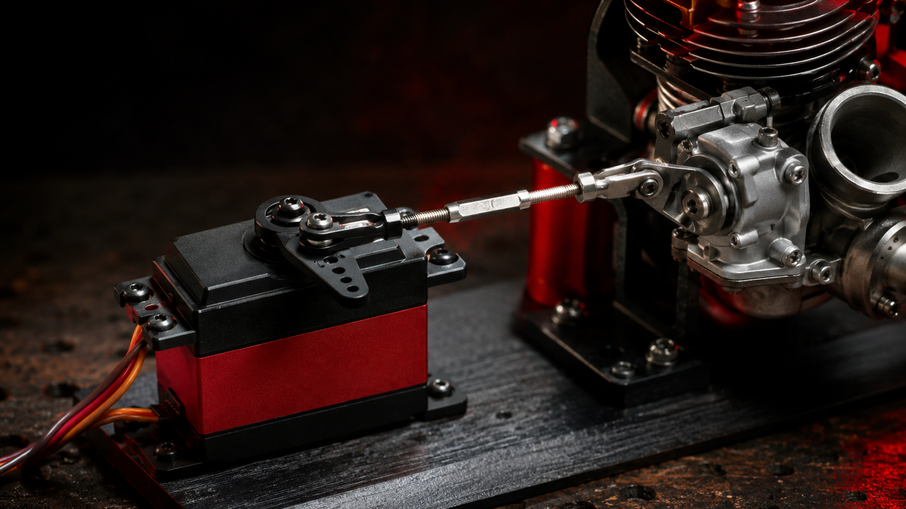
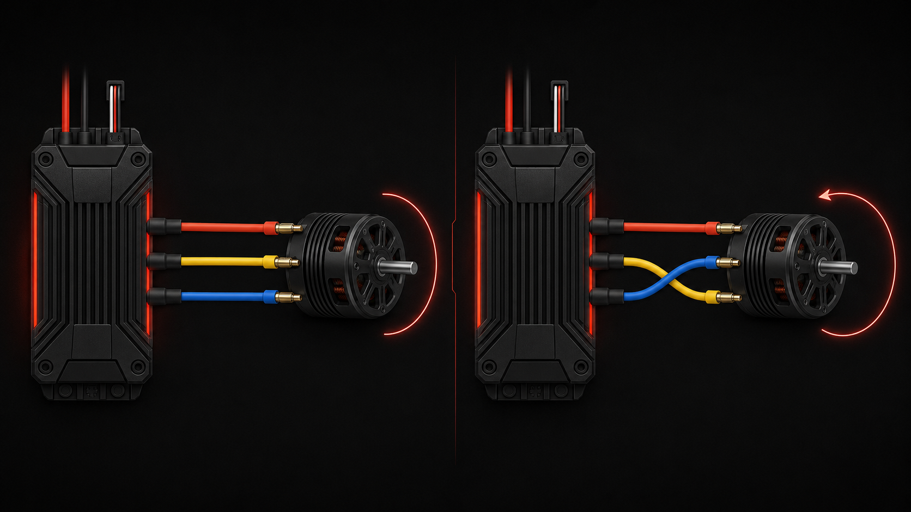
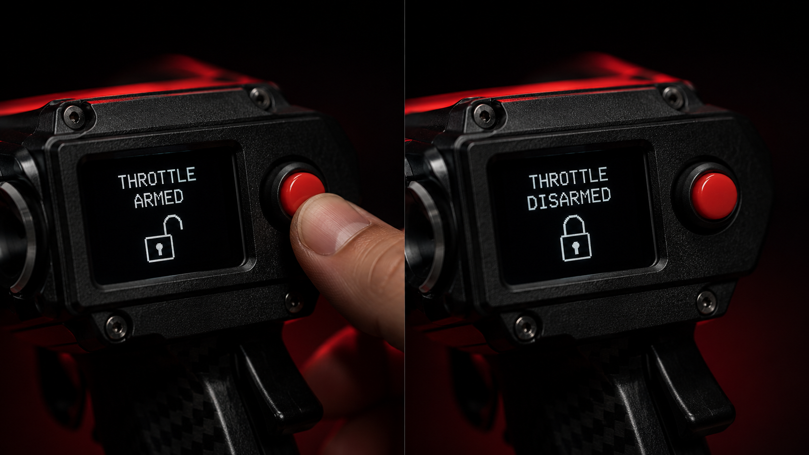

Throttle cut is one of those buttons you use all the time without thinking much about it — until you have to set it up from scratch. It's worth understanding exactly what it does, because a poorly configured throttle cut can cost you a rough landing, or worse, an engine that won't shut off when you need it to.
It's a dedicated push button on both the Zephyr and Typhoon, and it works exactly the same way on both: it lets you move the throttle to a position you define in the model's settings, ideal for shutting down the engine or bringing it to a safe position remotely.
What does change is how this feature behaves depending on your propulsion type — electric or combustion — so let's go through both.
Setting Up Throttle Cut for Combustion
For combustion engines, this feature goes hand in hand with properly setting up the carburetor servo's travel, so it's worth taking your time the first go-around. Here's the process:
- Set the direction of the servo that controls the carburetor so it matches the trigger: squeezing the trigger should open the carburetor.
- With the trigger released and the pushrod disconnected (so you don't force the servo), adjust the servo's minimum position in the model setup until the carburetor sits at a partially-open position — a bit more open than idle; you'll fine-tune this later.
- Adjust the maximum travel: a full trigger squeeze should move the servo to fully open the carburetor, without forcing it.
- Connect the pushrod to the carburetor arm and fine-tune these values, making sure the servo never binds at either end of its travel.

- Set the throttle cut position: this should move the servo to fully close the carburetor, without forcing or mechanically limiting the movement.
- With this initial setup in place, start the engine and confirm it shuts off correctly when you hold the throttle cut button.
- With the engine running, dial in the minimum throttle (idle): release the trigger, select this option from the menu, and adjust the value until you find the minimum opening that keeps the engine idling steadily.
- Test accelerating and decelerating to confirm everything behaves as expected.
With that, both throttle control and throttle cut are properly calibrated.
Setting Up Throttle Cut for Electric
For electric models, the process is much simpler. The throttle channel works on a -100 to 100 range, which maps to 0-100% throttle for the ESC.
One thing worth clarifying: reversing this channel does not reverse the motor's spin direction. What it does is flip the relationship between the trigger and the throttle — the motor would sit at 100% with the trigger released, and 0% with the trigger squeezed. This isn't a recommended setup unless you know exactly what you're doing.
If what you actually want is to reverse the motor's spin direction, the correct way is physical: swap two of the three wires between the motor and the ESC.

For electric setups, motor cut corresponds to a value of -100, which is equivalent to 0% throttle.
How Throttle Cut Locks the Throttle
Holding down the throttle cut button locks the throttle and moves it to the position you defined in the model's settings. That lock stays in place even after you release the button: the trigger stops responding, and a padlock icon appears on screen right next to the model name to let you know the throttle is still locked.
To get control back, hold down the throttle cut button again — this unlocks the throttle and control returns to the trigger immediately.

Whatever your setup, always test throttle cut on the ground after any adjustment before trusting it in flight.